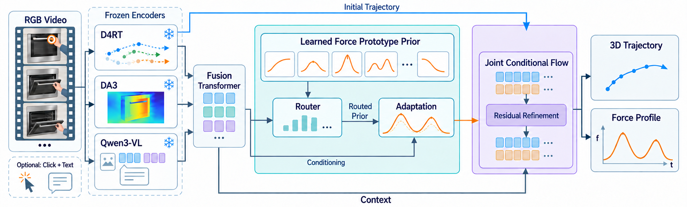
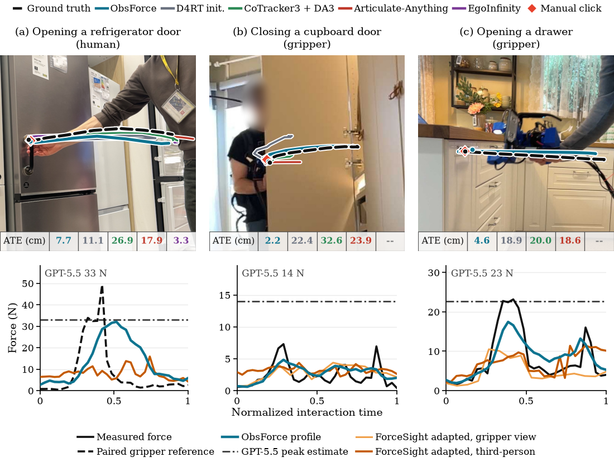
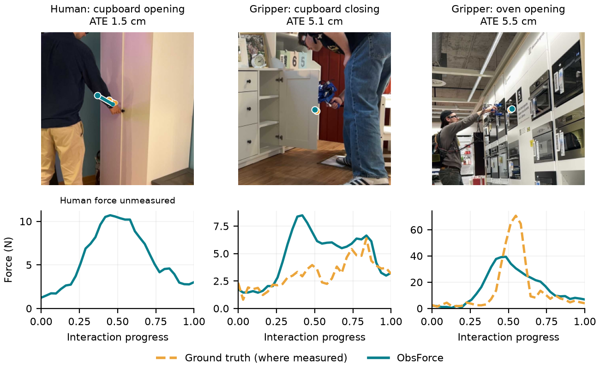
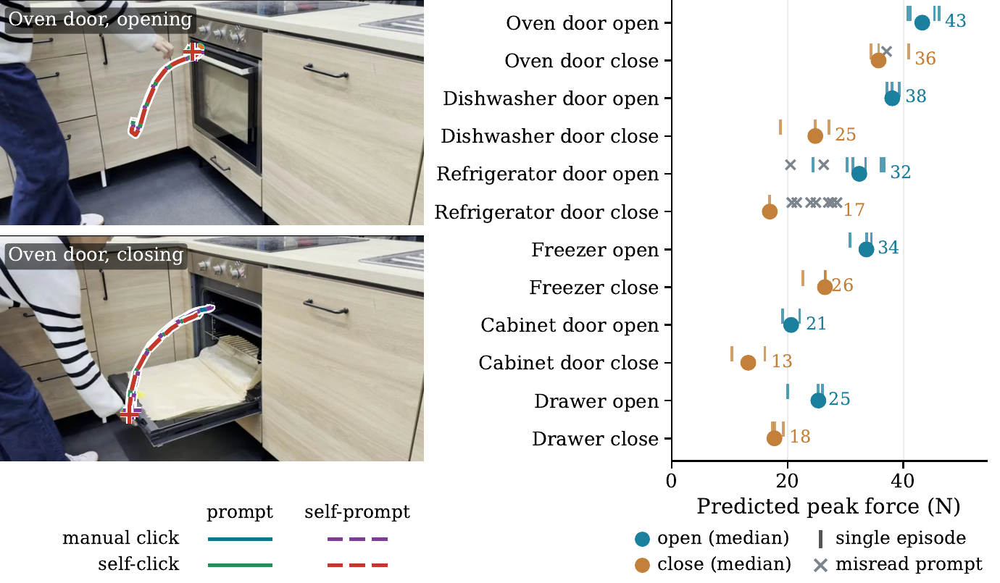

Anonymous research supplement
ObsForce: Learning Force-Aware Articulation by Observing Humans
From a third-person RGB video, ObsForce estimates a 3D interaction trajectory and a force profile. A contact click and an object–action prompt can be supplied or inferred from the video.
Anonymous submission to ICLR 2027Mean across three training seeds on the paper's Eval subset of Hoi!; contact click and object–action prompt supplied. These are evaluation results, not robot success rates.
Method
Limited instrumented recordings teach a set of force prototypes organized by measured effort. Video features select and adapt a prior; a conditional flow then refines the tracked trajectory and force profile together. Paired human and gripper recordings transfer measured-force supervision to human video.

Evaluation examples
Predicted trajectories and force profiles on human and instrumented-gripper interactions. Measured force is available for gripper recordings; a paired gripper trace is a reference for human video, not a human-force measurement.


Real-world videos
The study includes 46 episodes from seven phone videos of six kitchen objects. The figure shows predictions under different input combinations and predicted peaks across actions and objects.

Materials
Code, checkpoints, and demonstration videos are being prepared for anonymous release. The paper and appendix describe the full evaluation protocol and tables.